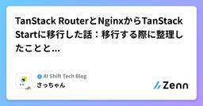

CyberAgent Developers Blog | サイバーエージェント デベロッパーズブログ
https://developers.cyberagent.co.jp/blog
サイバーエージェントのエンジニア・クリエイター・テクニカルクリエイターが執筆する公式ブログです。サイバーエージェントの技術情報を日々発信していきます。
フィード

TanStack RouterとNginxからTanStack Startに移行した話：移行する際に整理したこととつまずき
CyberAgent Developers Blog | サイバーエージェント デベロッパーズブログ
7月初めに私が行った、SPAへのフロントエンドサーバー導入の第一歩（Phase 1：ランタイム基盤構 ...
16時間前
YANS2026 参加報告
CyberAgent Developers Blog | サイバーエージェント デベロッパーズブログ
本記事では、YANS2026の概要と、筆者が特に面白いと感じた発表をいくつか紹介します。
16時間前

軽量な知識グラフで、AIエージェント向けのオントロジーを管理する 1
1
CyberAgent Developers Blog | サイバーエージェント デベロッパーズブログ
はじめに 普段 AI エージェントに作業を任せるとき、コンテキストを AGENTS.md などの . ...
4日前
MVP から始める、障害対応における AI 活用 1
CyberAgent Developers Blog | サイバーエージェント デベロッパーズブログ
背景 こんにちは。プログラマティック広告配信プロダクトを提供している AJA で DSP チームの ...
6日前
数十万時間の音声を現実的なコストでLLMにより24時間監視するまで ― ピグパーティのAIボイス監視システム 1
CyberAgent Developers Blog | サイバーエージェント デベロッパーズブログ
こんにちは。AIオペレーション室でバックエンドエンジニアを担当しているユンスです。今回は、ピグパーテ ...
7日前
DASH by Datadog 2026に登壇してきた
CyberAgent Developers Blog | サイバーエージェント デベロッパーズブログ
こんにちは。株式会社タップルでエンジニアリングマネージャーをしている山岸です。 この度、2026年6 ...
13日前